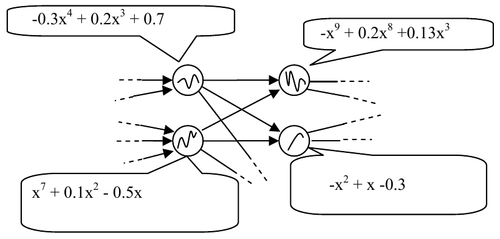
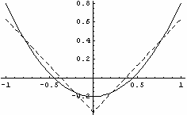

ICPC World Finals 2008 · Problem G
Rose N. Blatt is designing an embedded neural network to place inside a cell phone. When trained by the phone’s owner, the neural network will enable the user to dictate text messages in a hands-free way. The key idea in Rose’s design is the use of complicated polynomial response functions in each of the nodes of the network (rather than the more traditional thresholding functions used in many other neural nets). Figure 1 shows a portion of such a neural network (the polynomials are not accurately graphed).

When Rose was ready to select her polynomials, she discovered a problem. Due to the limited amount of memory available, she did not have enough space to store all of the coefficients of the polynomials in her network. She has decided to use an approximation to each polynomial in the form of a continuous polygonal curve with two segments, y = a1x + a0 and y = b1x + b0. The segments meet at a point whose x-coordinate, c, is between -1 and +1. Rose wants the approximation to be the best in the sense that the distance between p and the approximation function g is minimal. We define the distance between p and g as the integral of the square of their difference:
d(p, g) = ∫−11 (p(x) − g(x))2 dx
For instance, if the polynomial is x2 − 0.2, then the best polygonal approximation, with lines meeting at c = 0, is shown in Figure 2 (the dotted line shows the graph of the polygonal approximation).
g(x) = ⎧ -x - 0.367, -1 ≤ x ≤ 0
⎨
⎩ x - 0.367, 0 ≤ x ≤ 1

In the few bytes that are available for each node, Rose can store the values of a1, a0, b1, b0, and c as signed numbers. Fortunately Rose has a program that supplies her with a good guess for the value of c. Given this value, you are asked to help Rose find the optimal values for a1, a0, b1, and b0 in the approximations to her polynomials.
The input file contains multiple test cases. Each test case consists of three lines. The first line contains a positive integer n, 1 ≤ n ≤ 10, representing the degree of the polynomial p(x). This is followed by a line containing n +1 numbers between -1 and 1 inclusive, which are the coefficients of p(x) from highest order term down to the constant term, expressed with at most three places after the decimal point. The last line for each test case contains the value for c, -1 < c < 1, expressed with at most three places after the decimal point.
A line containing the integer zero follows the last test case.
For each test case, print the case number (beginning with 1) and the four optimal values, displaying each with exactly three places after the decimal point. The first and second values are the parameters a1 and a0 of the line segment y = a1x + a0 defining g in the range -1 ≤ x ≤ c. The third and fourth values are the parameters b1 and b0 of the line segment y = b1x + b0 defining g in the range c ≤ x ≤ 1. The distance d(p,g) between p and g (as defined earlier) should be the minimum over all such choices for a1, a0, b1, and b0.
2 1.0 0.0 -0.2 0.0 3 1 0 -1 0 0.707 0
Case 1: -1.000 -0.367 1.000 -0.367 Case 2: -0.499 -0.036 1.198 -1.236